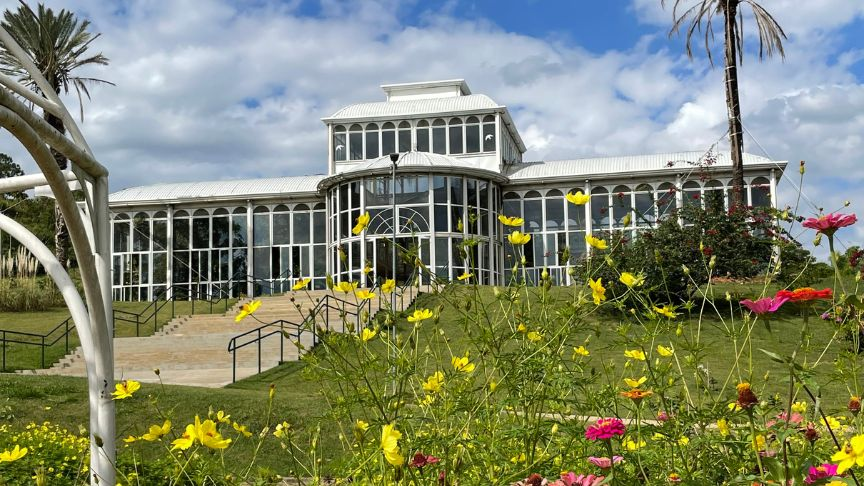
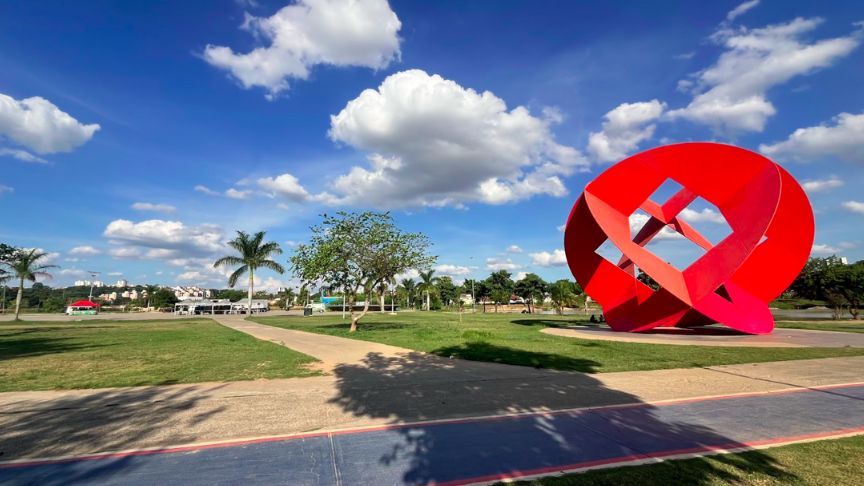
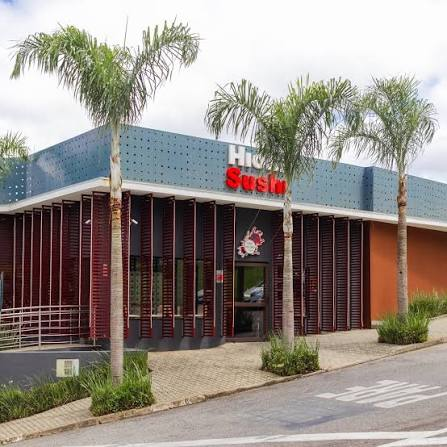

Sorocaba em 48 Horas
Fim de Semana · Parques & Gastronomia
3 Paradas Principais
Dia 1 no Jardim Botânico e Estação Ferroviária (MACS). Dia 2 no Zoológico Quinzinho de Barros e jantar no Campolim.
Abrir roteiro no Google Maps
Caminho dos Tropeiros
Meio Período · História & Sabores
Centro ao Campolim
Manhã no Mosteiro de São Bento e Catedral Metropolitana, fechando a tarde com a tradicional coxinha da Padaria Real.
Abrir roteiro no Google Maps

Dia Verde & Ciclovias
Ao Ar Livre · Família & Esporte
Entrada Gratuita
Passeio matinal pelo Zoológico Municipal seguido de pedalada pela ciclovia e pôr do sol no Parque das Águas.
Abrir roteiro no Google Maps

Rota Gastronômica
Dia Inteiro · Café, Almoço & Jantar
Campolim & Centro
Café da manhã na Padaria Real, almoço italiano no La Doc e jantar japonês no Kojima ou petiscos no Botequim da Francisca.
Abrir roteiro no Google Maps